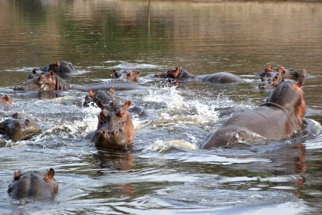

Categorie(s):
savane,
stepe
parc de la benoué
Ancien domaine privé de chasse du Lamido de Rey Bouba, le parc de la Bénoué devient réserve de faune en 1932, avant d’être transformé en parc national en 1968. D’une superficie de 180.000 hectares, il est actuellement géré par un conservateur assisté par des gardes chasses. On trouve assez facilement des cobs de Buffon, des cobs defassa, des bubales, des hypotragues, des girafes, des céphalophes, des hippopotames et de nombreux singes . Avec de la chance on peut voir des lions, des buffles, des éléphants, des élands de Derby. On y trouve également 300 espèces d’oiseaux et 75 espèces de poissons.
Le parc dispose de 3 campements gérés par l’Etat. Le campement du Grand Capitaine dispose de 8 chambres, le campement de chasse du Bel Elan de 2 chambres et le campement du Buffle Noir de 32 chambres et un bar restaurant. D’une manière générale les campements sont très rustiques mais ont le mérite d’être situés au coeur du parc.
Bien que disposant du statut de parc national, il souffre d’un manque d’entretien flagrant aussi bien au niveau des campements que de l’aménagement du parc pour les touristes. La Bénoué est surtout intéressant pour ses nombreuses mares aux hippopotames qui permettent de les observer de très près. Seul le campement du Buffle Noir offre le minimum de confort. La propreté du site est approximative et les services minimalistes. Enfin, si vous êtes un accroc du téléphone portable, pas de réseau disponible sur le campement. Cependant, un point sous un arbre permet de capter épisodiquement une liaison. Cet arbre connu sous le nom de call box vous sera indiqué par le personnel du campement. Le campement est ouvert de novembre à mai
Le paiement des droits d’accès se fait auprès du conservateur au campement du Buffle Noir. Par jour les tarifs sont les suivants : 5.000 FCFA par parsonne, 2.000 FCFA par appareil photos ou caméra, 2.000 FCFA pour le véhicule, 3.000 FCFA pour le guide/pisteur
Pour s'y rendre : Il faut prendre la N1 et compter 124 Km de route depuis Ngaoundéré ou 169 Km depuis Garoua pour arriver à Banda, unique point d’accès recommandé pour les visiteurs. Les 3 autres entrées sont à déconseiller compte tenu du très mauvais état des pistes. Il faut ensuite faire 34 Km de piste parcourus en 45 minutes, avant d’arriver au campement du Buffle Noir.